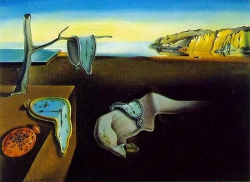

Line 3: And the afternoon, the evening, sleeps so peacefully!
by Manasvi
Here we can see a confusion in time, which is also seen in other parts of the poem. In this line, I feel there is no distinguishment between the past, present, and future as Prufrock talks about about the afternoon and evening, simultaneously and states that they sleep so peacefully, using the present tense.
Another example of this in the poem is when he says “I grow old...I grow old.../ I shall wear the bottoms of my trousers rolled” where he is presently feeling that he is growing old, but also guesses at what he might do in the future. I find the word “sleeps” to be very interesting in this particular line because it can connect to a painting by Salvador Dali in 1931. This painting holds the meaning that time has no power when we are asleep and dreaming. Dali basically wanted to portray that time is useless in a dream state, that when we are awake we are always busy, rushing, and constantly worrying about time.
Ultimately, Prufrock can be represented to be awake and longing to sleep peacefully like the afternoon and evening. He lives in a world where he is insecure and constantly lonely, fearful, and worrisome, thus he desires to be like the afternoon and evening, to be peacefully asleep with no worries.